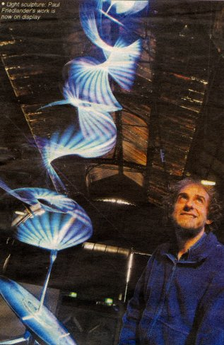

Metro Manchester
20 October 2000
Python, tornado or eel?
by Ben Carlish
It looks like a 25- ft psychedelic tornado. Or a giant multi-coloured disco-dancing python. Or even a Dulux-coated electric eel.
Part of the fun, Fallowfield-born Paul Friedlander's Wave factory sculpture, is trying to decide exactly what it does look like.
The Wave factory, now at Upper Campfield Market Gallery on Deansgate is a rotating rope suspended on a triangular frame with coloured strobe lighting fired at it, so it constantly changes shape and colour.
Viewers can move their hands over infra red sensors to alter the speed of the rope and the light filter.
"A typical reaction of people when they walk in through the doors to see the sculpture is to go 'wooh!' said 49 year old Friedlander, a graduate of physics and fine art.
It puts people in touch with their child like qualities. They appear to display youthful joy and it brings out a innocence not available in other pieces of art.
"There is a real mystery to it as well, sometimes the shape of the sculpture becomes quite human."
The sculpure, part of the inter:face arts and technology exhibition, took Friedlander 15 years to develop.
He first had the idea when working in holographics in the States and tried to create a 3-D hologram involving a skipping rope and a stroboscope.
He prototyped a tiny nine inch version to sell as a lava lamp like novelty gift. Bill Parker, the man who marketed plasmas globes - the glass spheres with static electric pulses flowing throught them - endorsed the mini sculptures. But they sold only 30,00 and were dropped.
Friedlander then devoted his time to building it as a large art installation using a search light-like-modulator, a computer programme, infra red sensors and a 25-ft high carbon fibre frame.
He has not ruled out marketing the idae to the club scene and is already working on his next project which will involve "wave equations."